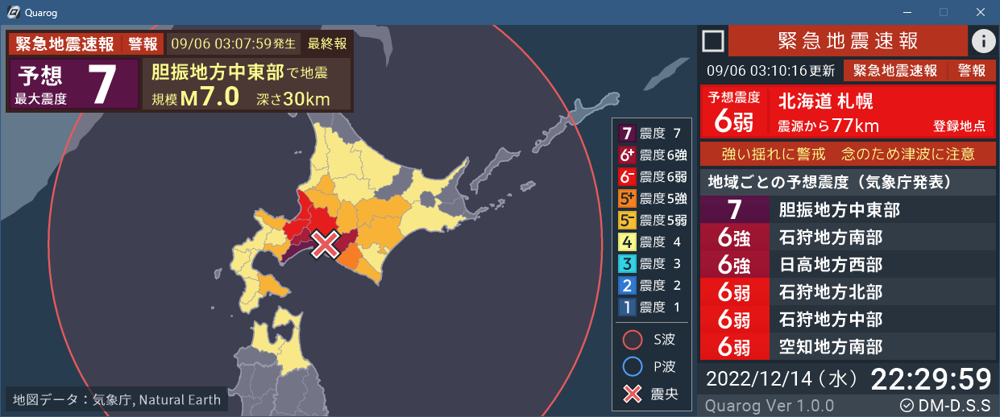
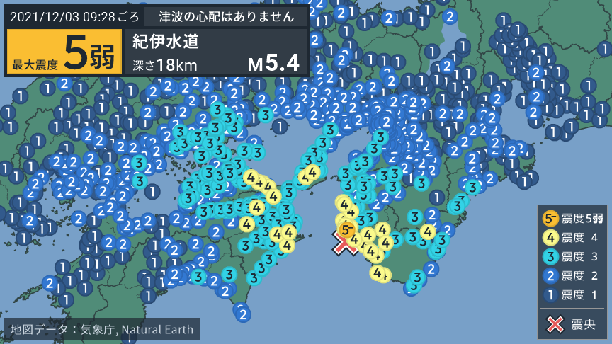
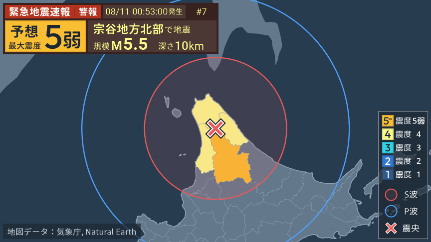
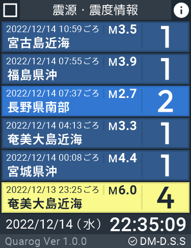
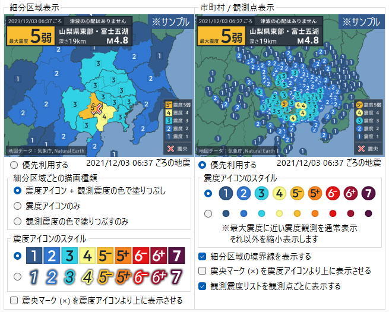
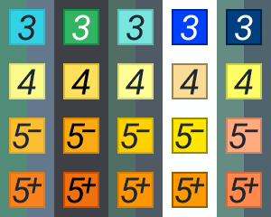

地震関連情報受信ソフト Quarog
Quarogは日本の地震情報・緊急地震速報を受信し、わかりやすく表示するソフトウェアです
Download (Only Windows)
Features

地震情報
気象庁から配信される地震情報を受信し、地図上に描画します。 さらに、Project DM-D.S.Sサービスを利用することで一刻を争う地震情報を即座に受信することができます。

緊急地震速報
緊急地震速報が発表されると、発表内容を地図に描画し即座に知らせます。P波やS波の到達予測円も描画されるため、揺れの拡がりが直感的に把握できます。

地震履歴
地震履歴はスクロールすることで20～50件前の地震の概要を閲覧できます。また、より詳しく閲覧したい地震をクリックするとその地震の情報が地図に描画されます。
緊急地震速報の詳細
緊急地震速報が発表されると、地震履歴の代わりに緊急地震速報の予想震度の詳しい情報が表示されます。自分の登録した地点については震源からの距離も表示されます。

豊富な設定項目
緊急地震速報や地震情報など、様々な項目について多様な設定が行えるようになっており、自分好みの設定を利用できます。

色の設定
利用者にとって違和感を感じない色を利用できるよう、震度配色や地図配色を自由にカスタマイズできるようになっています。
Download Latest Version
Download
推奨動作環境：Windows 7以上, 2Core CPU, 4GB RAM